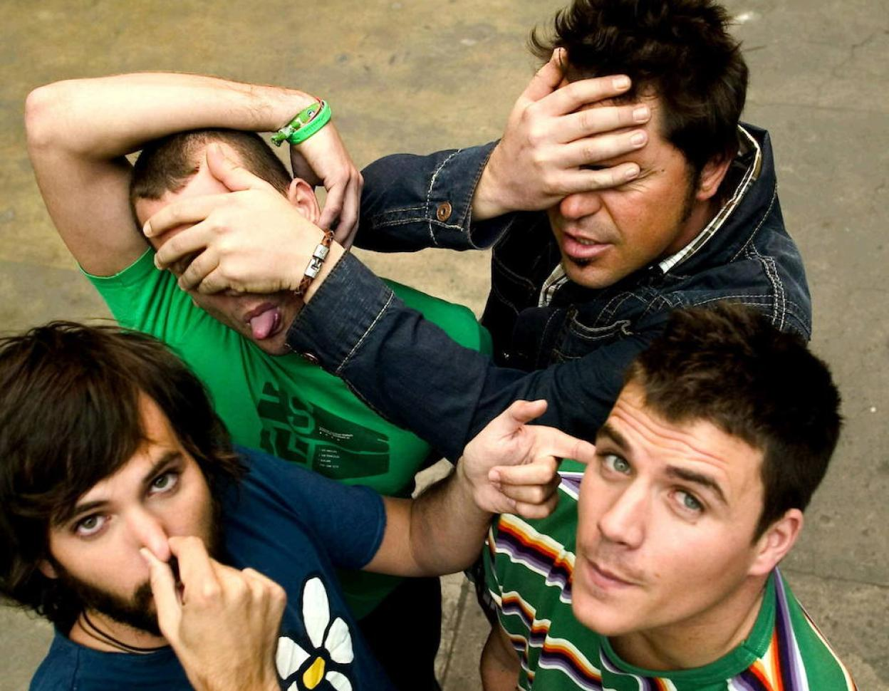

Como miembro del grupo "El Canto del Loco", puedo decirte que fue una experiencia increíble. Nos formamos en Madrid en 1994 y desde el primer momento supimos que estábamos creando algo especial. Éramos cuatro amigos unidos por nuestra pasión por la música: Dani Martín, David Otero (o "David Summers", como le decíamos cariñosamente), Chema Ruiz y Jandro Velázquez. Nuestro sonido característico era una mezcla de pop-rock enérgico con letras frescas y pegadizas. Siempre nos esforzamos por transmitir emociones a través de nuestra música y conectar con nuestro público. Nos encantaba experimentar con diferentes géneros, fusionando el pop-rock con elementos de punk, ska y electrónica, lo que nos permitió mantenernos innovadores y relevantes. A medida que lanzábamos álbumes de estudio, recopilaciones y sencillos, nuestra popularidad creció rápidamente. Era increíble ver cómo nuestras canciones resonaban con la gente y cómo llenábamos estadios en nuestros conciertos. Algunos de nuestros mayores éxitos fueron temas como "Insoportable", "La Madre de José", "Zapatillas", "Por Ti", "Volverá" y "Peter Pan". La fama y el éxito nos brindaron muchas oportunidades emocionantes, pero también nos llevó a tomar una difícil decisión. En 2010, anunciamos una pausa indefinida para que cada uno de nosotros pudiera explorar proyectos en solitario. Dani y David tuvieron carreras exitosas como solistas, pero siempre sentimos que faltaba algo sin la dinámica única que teníamos como grupo. Finalmente, en 2017, decidimos que era el momento de reunirnos nuevamente y dar a nuestros fans una despedida apropiada. Realizamos una gira de conciertos que culminó en una noche épica en el Estadio Vicente Calderón de Madrid. Fue una despedida llena de emoción y gratitud por todo el apoyo que recibimos a lo largo de los años. Ser parte de "El Canto del Loco" fue una experiencia que siempre recordaré con cariño. La música nos unió y nos permitió compartir nuestra pasión con miles de personas. A través de nuestras canciones, dejamos un legado duradero en la música española y nos sentimos agradecidos por el impacto que tuvimos en la vida de nuestros fans.
